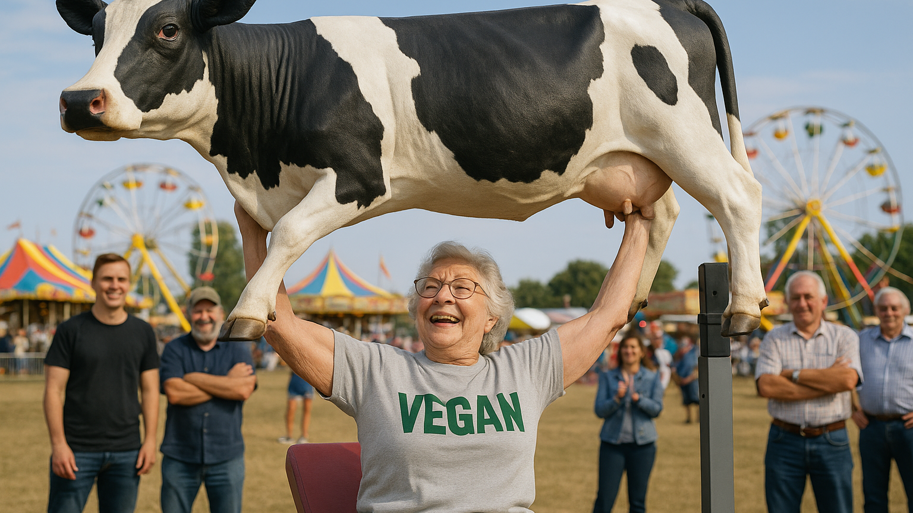

Why Vegan Protein Is Better Than Whey Protein
Whey wears the crown of tradition, but plant powder has been quietly sharpening its blades—and the duel isn’t close any more.
Quality used to be whey’s trump card until a 2022 human-ileal study clocked pea isolate at a perfect 1.00 DIAAS, meaning it meets every essential-amino requirement as cleanly as casein. *
Muscle growth? An eight-week resistance trial found novices adding 25 g pea after training grew as much arm muscle as the whey group—no dairy, same biceps. *
Digestion decides real-world loyalty. Roughly 65 percent of adults lose lactose-digesting enzymes after childhood, so whey can spark bloating that peas never provoke. *
Heart health tilts green. A broad review of plant-versus-animal protein links plant intake to lower blood pressure and plasma cholesterol, a win whey simply can’t claim. *
The planet calls the final point. Producing 100 g of dairy protein emits over six times the CO₂ of pea protein—your post-workout shake can be the carbon equivalent of a cross-country flight or a subway ride. *
Add it up. Equal—or better—amino quality, proven hypertrophy, zero lactose landmines, cardiovascular perks, and a carbon footprint small enough to disappear behind the blender. Vegan protein isn’t the alternative any more; it’s the upgrade.